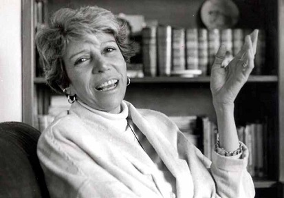

Nancy Cárdenas
Nascida em 1934, originalmente de Parras, Coahuila. Nancy viajou pelos Estados Unidos e Europa, aperfeiçoando e estudando a escrita e o teatro pelos quais mais tarde seria reconhecida. Quando ele voltou ao México, tornou-se uma força dentro do ativismo homossexual que surgiu na década de 1970.
Em 1960-1961, estudou cinema e teatro na Universidade de Yale, nos Estados Unidos; em 1961, continuou seus estudos em Lodz, na Polônia, sobre língua e literatura polonesas.
Depois de viajar pela Europa, Cárdenas retornou à Cidade do México, onde trabalhou no rádio, primeiro na produção e depois como atriz. Ela também trabalhou como jornalista e tradutora.
No final da década de 1960, permaneceu na vanguarda do ativismo da oposição e foi presa em 1968 enquanto participava de protestos estudantis contra a violência policial. No início dos anos 70, realizou movimentos de libertação gay na Europa e nos Estados Unidos e começou a procurar maneiras de melhorar o status de gays e lésbicas no México. Assim, em 1971, foi co-fundadora da Frente de Libertação Homossexual, o primeiro grupo do gênero no México e, juntamente com Carlos Monsiváis, Juan Jacobo Hernández e Luis González de Alba, publicaram o primeiro manifesto homossexual no país, publicado na revista Siempre !
Em 1973, Nancy Cárdenas tomou a corajosa decisão que a colocaria na história como a primeira pessoa a deixar o armário na televisão nacional. No programa noturno "24 horas" com Jacobo Zabludovsky, Nancy interveio em favor de um trabalhador homossexual que havia sido demitido, falando sobre a situação legal dos homossexuais, sua perseguição e repressão no país, direitos iguais e das distorções que a psicanálise e a psiquiatria fizeram da homossexualidade, ele defendeu os direitos dos homossexuais e das mulheres e também se reconheceu como lésbica.
Cárdenas considerou que a visibilidade das lésbicas latinas deveria ser aumentada. Ela participou de conferências na América Latina e no Caribe e começou a escrever e produzir temas abertamente lésbicos.
Nancy foi o primeiro intelectual a defender abertamente e na primeira pessoa os direitos das minorias sexuais. Ele trouxe para o México a peça "Os Garotos da Banda", com considerável sucesso nas bilheterias, e expressou sua solidariedade com a luta contra o HIV.
Muito de seu trabalho girava em torno de sua identidade lésbica, escrevendo coleções de poesias e peças falando de temas gays e lésbicos. Ela não era só escritora, também era ativista, ajudou a começar a luta contra o preconceito contra gays no México e lutou por direitos iguais para todos, independentemente de sua sexualidade.
Morreu vítima de câncer de mama, em 23 de março de 1994.